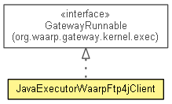

org.waarp.ftp.gateway.exec
Class JavaExecutorWaarpFtp4jClient
java.lang.Object
 org.waarp.ftp.gateway.exec.JavaExecutorWaarpFtp4jClient
org.waarp.ftp.gateway.exec.JavaExecutorWaarpFtp4jClient
- All Implemented Interfaces:
- Runnable, org.waarp.gateway.kernel.exec.GatewayRunnable
public class JavaExecutorWaarpFtp4jClient
- extends Object
- implements org.waarp.gateway.kernel.exec.GatewayRunnable

FTP client compatible for Waarp Gateway Kernel as JavaExecutor
Ftp Transfer task: synchronous
Result of arguments will be as FTP command.
Format is the following:
"-file filepath
-to requestedHost
-port port
-user user
-pwd pwd
[-account account]
[-mode active/passive]
[-ssl no/implicit/explicit]
[-cwd remotepath]
[-digest (crc,md5,sha1)]
[-pre extraCommand1 with ',' as separator of arguments]
-command command from (get,put,append)
[-post extraCommand2 with ',' as separator of arguments]"
The order of commands will be:
1) connection to requestHost on port (if ssl native => using native ssl link)
2) User user
3) PASS pwd
4) if account => ACCT account
5) if -ssl & auth => AUTH, PBSZ 0, PROT P
6) if passive => PASV
7) CWD remotepath; if error => MKD remotepath then CWD remotepath (and ignoring any error)
8) if pre => extraCommand1 with ',' replaced by ' ' (note: do not use standard commands from FTP
like
ACCT,PASS,REIN,USER,APPE,STOR,STOU,RETR,RMD,RNFR,RNTO,ABOR,CWD,CDUP,MODE,PASV,PORT,STRU,TYPE,
MDTM,MLSD,MLST,SIZE,AUTH)
9) BINARY (binary format)
10) if get => RETR filepath.basename ; if put => STOR filepath ; if append => APPE
filepath.basename
11) if digest & get/put/append & remote site compatible with XCRC,XMD5,XSHA1 => FEAT (parsing if
found corresponding XCRC,XMD5,XSHA1) ; then XCRC/XMD5/XSHA1 filepath.basename ; then locally
comparing this XCRC/XMD5/XSHA1 with the local file
12) if post => extraCommand2 with ',' replaced by ' ' (note: do not use standard commands from
FTP like
ACCT,PASS,REIN,USER,APPE,STOR,STOU,RETR,RMD,RNFR,RNTO,ABOR,CWD,CDUP,MODE,PASV,PORT,STRU,TYPE
,MDTM,MLSD,MLST,SIZE,AUTH)
13) QUIT
- Author:
- "Frederic Bregier"
| Methods inherited from class java.lang.Object |
clone, equals, finalize, getClass, hashCode, notify, notifyAll, toString, wait, wait, wait |
| Methods inherited from interface org.waarp.gateway.kernel.exec.GatewayRunnable |
toString |
JavaExecutorWaarpFtp4jClient
public JavaExecutorWaarpFtp4jClient()
run
public void run()
- Specified by:
run in interface Runnable
setArgs
public void setArgs(boolean waitForValidation,
boolean useLocalExec,
int delay,
String[] args)
- Specified by:
setArgs in interface org.waarp.gateway.kernel.exec.GatewayRunnable
getFinalStatus
public int getFinalStatus()
- Specified by:
getFinalStatus in interface org.waarp.gateway.kernel.exec.GatewayRunnable
Copyright © 2009-2013 Waarp. All Rights Reserved.